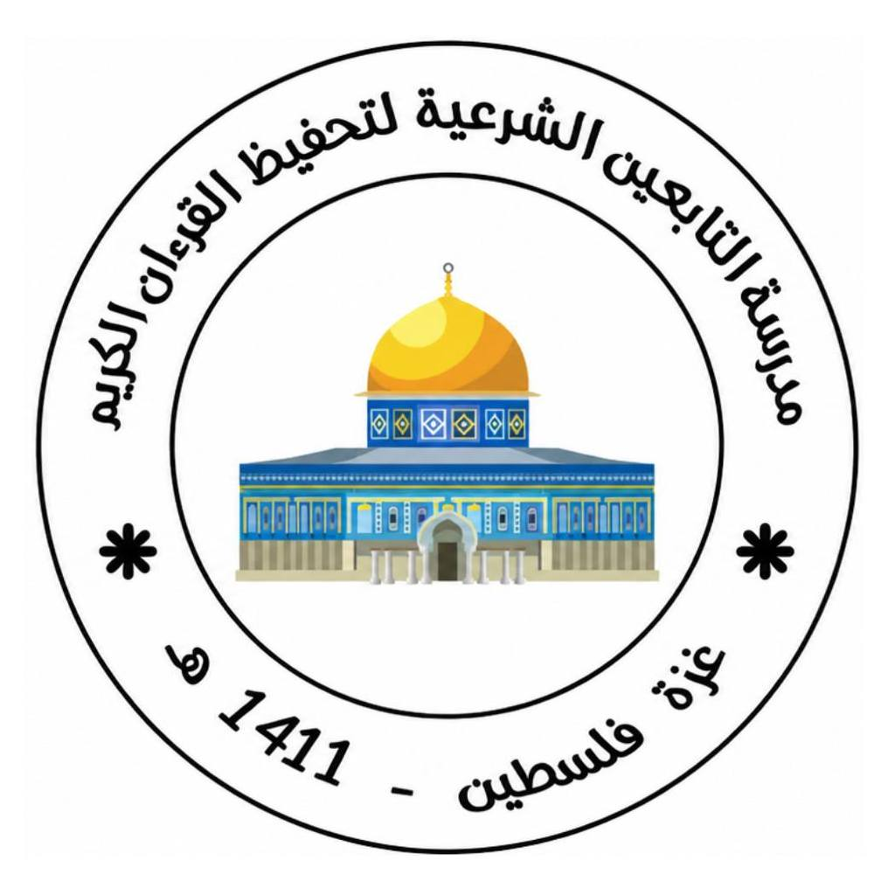

📚 الفصول المقررة – 9 فصول
اضغط ابدأ لفتح أي درس. داخل كل درس: الشرح + المفاهيم + أسئلة تفاعلية.
📖 المفاهيم الأساسية – كل الدروس
📝 الاختبار النهائي – 10 أسئلة
اختبار شامل من الدروس الثمانية، تصحيح تلقائي وعلامة.

مدرسة التابعين الشرعية – الصف العاشر الأساسي
إشراف المعلم الفاضل: أ. سعيد السكافي
برمجة وتطوير: بدر صبرة
المصدر: كتاب العلوم الحياتية (الأحياء) للصف العاشر – الفصل الأول – وزارة التربية والتعليم – غزة
الرزمة كاملة: 9 فصول – من رزمة وزارة التربية والتعليم 2024
اضغط ابدأ لفتح أي درس. داخل كل درس: الشرح + المفاهيم + أسئلة تفاعلية.
اختبار شامل من الدروس الثمانية، تصحيح تلقائي وعلامة.